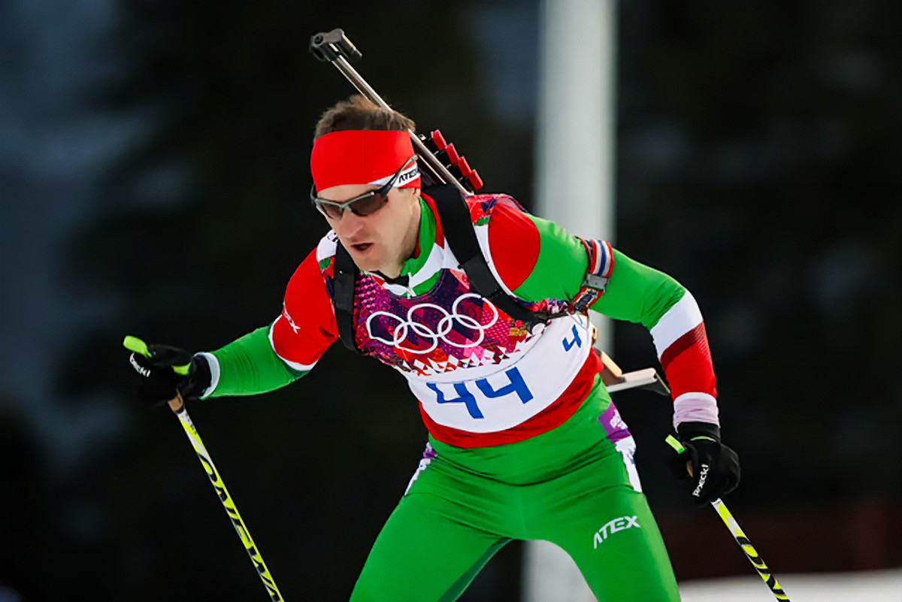

Биатлон
Сергей Валентинович Новиков — серебряный призёр Олимпиады-2010 в Ванкувере, один из самых титулованных биатлонистов Беларуси. Родился 27 апреля 1979 года в Чаусах Могилёвской области, и его биатлонный путь начинался там же.
Отец Сергея, Валентин Фёдорович Новиков, был тренером по биатлону в Чаусской ДЮСШ — и сына на лыжи поставил, как только тот научился ходить. «Он только научился ходить, и я его сразу же на лыжи поставил», — вспоминал отец. Систематически биатлоном Сергей занимается с 1991 года, хотя сам позже шутил, что всё начиналось скромно: «Мы просто бегали кроссом, роллерной подготовки в таком возрасте не было». В 13 лет переехал из Чаус в Могилёв, где стал профессионально тренироваться в школе олимпийского резерва. Тренеры — Валентин Новиков, Игорь Клименков, Анатолий Перепечкин, Юрий Альберс. Окончил факультет физического воспитания Могилёвского госуниверситета им. Кулешова.
В национальной сборной Беларуси — с 2001 года. По профессии был инспектором таможни (младший лейтенант) в Могилёве.
Любопытно, что уже на проходившей после Олимпиады чемпионате Европы в Арбере он взял ещё три медали: серебро в спринте и два золота — в преследовании и эстафете.
После Ванкувера стопроцентного повторения не случилось: за следующий цикл лишь раз попал в десятку сильнейших (9-е место в индивидуальной гонке на ЧМ-2012 в Рупольдинге). Отъезд на Игры-2014 в Сочи сложился неудачно, и в феврале 2014-го он объявил о завершении карьеры. Последняя гонка — 15 марта 2014 года, 70-е место в спринте Контиолахти. Сезон 2009/10 стал его лучшим в Кубке мира — 26-е место в общем зачёте при точности стрельбы 91%.
В тренеры он не пошёл — как сам признавался, кочевой спортивной жизни за границами устал. Сначала год искал себя, потом возглавил Могилёвский областной спортивный клуб «Спартак» Федерации профсоюзов, а в 2020 году был назначен начальником управления спорта и туризма Могилёвского облисполкома — эту должность занимает до сих пор. По-прежнему участвует в ветеранских стартах: побеждал в «Гонке легенд» в Раубичах в паре с Надеждой Скардино.
Звания и награды: Заслуженный мастер спорта Республики Беларусь (2010). Почётный гражданин Чаусского района (2010). Имя занесено в «Книгу славы Могилёвщины», лауреат областной премии «Человек года» (2010).